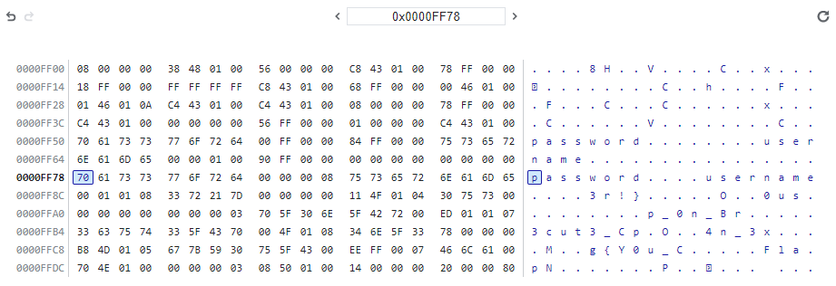

web_assembly
WebページのURLが与えられた。
アクセスすると、「Please input your name」というプロンプトが表示され、それを閉じると続いて「Please input your password」というプロンプトが表示された。
Firefox の開発者ツールで確認すると、index.wasm というファイルを取得していたので、これをダウンロードした。
そして、これを WABT で解析することにした。
まず、AWS で AMI「Ubuntu Server 22.04 LTS (HVM), SSD Volume Type」 (ami-0fcf52bcf5db7b003) を用いて t2.micro のEC2インスタンスを立てた。
そして、そのインスタンス上で、index.wasm をホームディレクトリに置き、WABTの README.md に沿って以下のコマンドを実行した。
An URL of a web page was given.
Opening the page, a prompt saying "Please input your name" appeard. Closing the prompt, another prompt saying "Please input your password" appeared.
Using the Developer Tools on Firefox, I found that a file index.wasm is fetched, so I downloaded this file.
Then, I decided to investigate this using WABT.
I started an AWS EC2 t2.micro instance with AMI "Ubuntu Server 22.04 LTS (HVM), SSD Volume Type" (ami-0fcf52bcf5db7b003).
Then, on the instance, I put the index.wasm to the home directory and executed these commands, based on WABT README.md.
sudo apt-get update
sudo apt-get -y upgrade
sudo apt-get -y install gcc g++ git cmake python3
git clone --recursive https://github.com/WebAssembly/wabt
cd wabt
git submodule update --init
mkdir build
cd build
cmake ..
cmake --build .
./wasm-decompile ../../index.wasm -o ../../index.dcmp
得られた index.dcmp から「main」を検索すると、1944行目で見つかった。
I searched for "main" from the index.dcmp. It was found at the line 1944.
export function main(a:int, b:int):int {
var c:int = f_n();
return c;
}
ここで呼ばれている関数 f_n の定義は、531行目からあった。
The definition of function f_n, which is called here, started from the line 531.
function f_n()
function f_n():int {
var a:int = g_a;
var b:int = 144;
var c:int_ptr = a - b;
g_a = c;
var d:int = 0;
c[35] = d;
var e:int = 128;
var f:int = c + e;
var g:int = f;
var h:int = 65952;
f_o(g, h);
var i:int = 116;
var j:int = c + i;
var k:int = j;
var l:int = 66124;
f_o(k, l);
var m:int = 104;
var n:int = c + m;
var o:int = n;
var p:int = 65948;
f_o(o, p);
var q:int = 92;
var r:int = c + q;
var s:int = r;
var t:int = 66022;
f_o(s, t);
var u:int = 80;
var v:int = c + u;
var w:int = v;
var x:int = 65642;
f_o(w, x);
var y:int = 68;
var z:int = c + y;
var aa:int = z;
var ba:int = 65821;
f_o(aa, ba);
var ca:int = 56;
var da:int = c + ca;
var ea:int = da;
var fa:int = 65809;
f_o(ea, fa);
var ga:int = 44;
var ha:int = c + ga;
var ia:int = ha;
var ja:int = 65738;
f_o(ia, ja);
var ka:int = 32;
var la:int = c + ka;
var ma:int = la;
var na:int = 65536;
f_o(ma, na);
var oa:int = env_prompt_name();
var pa:int = 20;
var qa:int = c + pa;
var ra:int = qa;
f_o(ra, oa);
var sa:int = env_prompt_pass();
var ta:int = 8;
var ua:int = c + ta;
var va:int = ua;
f_o(va, sa);
var wa:int = 82884;
var xa:int = 66157;
var ya:int = f_p(wa, xa);
var za:int = 20;
var ab:int = c + za;
var bb:int = ab;
var cb:int = f_q(ya, bb);
var db:int = 1;
f_s(cb, db);
var eb:int = 82884;
var fb:int = 66174;
var gb:int = f_p(eb, fb);
var hb:int = 8;
var ib:int = c + hb;
var jb:int = ib;
var kb:int = f_q(gb, jb);
var lb:int = 1;
f_s(kb, lb);
var mb:int = 20;
var nb:int = c + mb;
var ob:int = nb;
var pb:int = 128;
var qb:int = c + pb;
var rb:int = qb;
var sb:int = f(ob, rb);
var tb:int = 1;
var ub:int = sb & tb;
if (eqz(ub)) goto B_b;
var vb:int = 8;
var wb:int = c + vb;
var xb:int = wb;
var yb:int = 116;
var zb:int = c + yb;
var ac:int = zb;
var bc:int = f(xb, ac);
var cc:int = 1;
var dc:int = bc & cc;
if (eqz(dc)) goto B_b;
var ec:int = 82884;
var fc:int = 66099;
var gc:int = f_p(ec, fc);
var hc:int = 1;
f_s(gc, hc);
var ic:int = 82884;
var jc:int = 104;
var kc:int = c + jc;
var lc:int = kc;
var mc:int = f_q(ic, lc);
var nc:int = 92;
var oc:int = c + nc;
var pc:int = oc;
var qc:int = f_q(mc, pc);
var rc:int = 80;
var sc:int = c + rc;
var tc:int = sc;
var uc:int = f_q(qc, tc);
var vc:int = 68;
var wc:int = c + vc;
var xc:int = wc;
var yc:int = f_q(uc, xc);
var zc:int = 56;
var ad:int = c + zc;
var bd:int = ad;
var cd:int = f_q(yc, bd);
var dd:int = 44;
var ed:int = c + dd;
var fd:int = ed;
var gd:int = f_q(cd, fd);
var hd:int = 32;
var id:int = c + hd;
var jd:int = id;
var kd:int = f_q(gd, jd);
var ld:int = 1;
f_s(kd, ld);
var md:int = 0;
c[35] = md;
var nd:int = 1;
c[1] = nd;
goto B_a;
label B_b:
var od:int = 82884;
var pd:int = 66058;
var qd:int = f_p(od, pd);
var rd:int = 1;
f_s(qd, rd);
var sd:int = 0;
c[1] = sd;
label B_a:
var td:int = 8;
var ud:int = c + td;
f_dhb(ud);
var vd:int = 20;
var wd:int = c + vd;
f_dhb(wd);
var xd:int = 32;
var yd:int = c + xd;
f_dhb(yd);
var zd:int = 44;
var ae:int = c + zd;
f_dhb(ae);
var be:int = 56;
var ce:int = c + be;
f_dhb(ce);
var de:int = 68;
var ee:int = c + de;
f_dhb(ee);
var fe:int = 80;
var ge:int = c + fe;
f_dhb(ge);
var he:int = 92;
var ie:int = c + he;
f_dhb(ie);
var je:int = 104;
var ke:int = c + je;
f_dhb(ke);
var le:int = 116;
var me:int = c + le;
f_dhb(me);
var ne:int = 128;
var oe:int = c + ne;
f_dhb(oe);
var pe:int = c[35];
var qe:int = 144;
var re:int = c + qe;
g_a = re;
return pe;
}
この関数からは、関数 env_prompt_name() および env_prompt_pass() が呼ばれている。
これらの関数に注目し、Google Chrome で与えられたURLを開き、開発者ツールの Sources から index.wasm を調べると、
0x001006 に call $env.prompt_name が、0x001020 に call $env.prompt_pass があった。
そこで、これらの周辺の動作を調べると、0x00102c の i32.add を実行後、スタックに値 65400 (0xff78) が積まれた。
Scope → Module → memories → $memory から Memory Inspector を開き、このアドレス 0xff78 付近を調べると、プロンプトで入力した値があり、その周辺にflagの断片っぽいデータもあった。
This function calls functions env_prompt_name() and env_prompt_pass().
Highlighting these functions, I opened the given URL on Google Chrome and inspected index.wasm on "Source" tab in the Developer Tools.
As a result, I found call $env.prompt_name at 0x001006 and call $env.prompt_oass at 0x001020.
I checked how it behaves around this and found that a value 65400 (0xff78) is pushed to the stack after executing i32.add at 0x00102c.
I opened the Memory Inspector from Scope → Module → memories → $memory and inspected around this address 0x00f78. As a result, I found data I entered for the prompts and something that look like fragments of the flag.

これらの断片を組み合わせることで、flagが得られた。
I obtained the flag by assembling these fragments.
Flag{Y0u_C4n_3x3cut3_Cpp_0n_Br0us3r!}
WaniCTF 2023